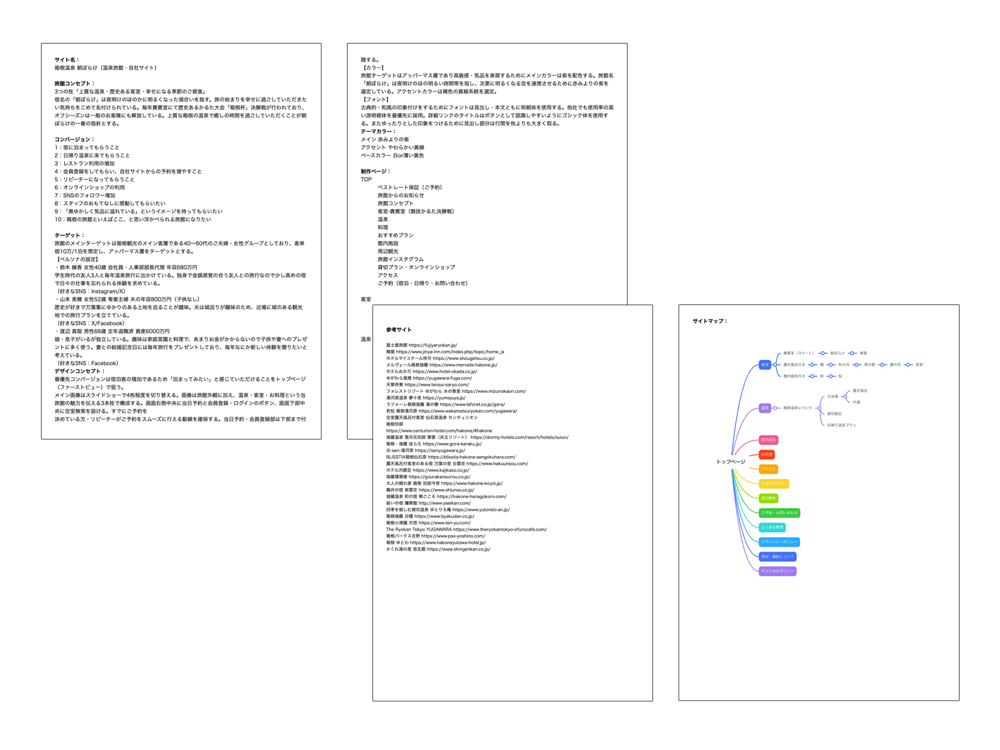
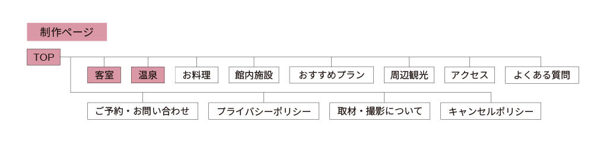
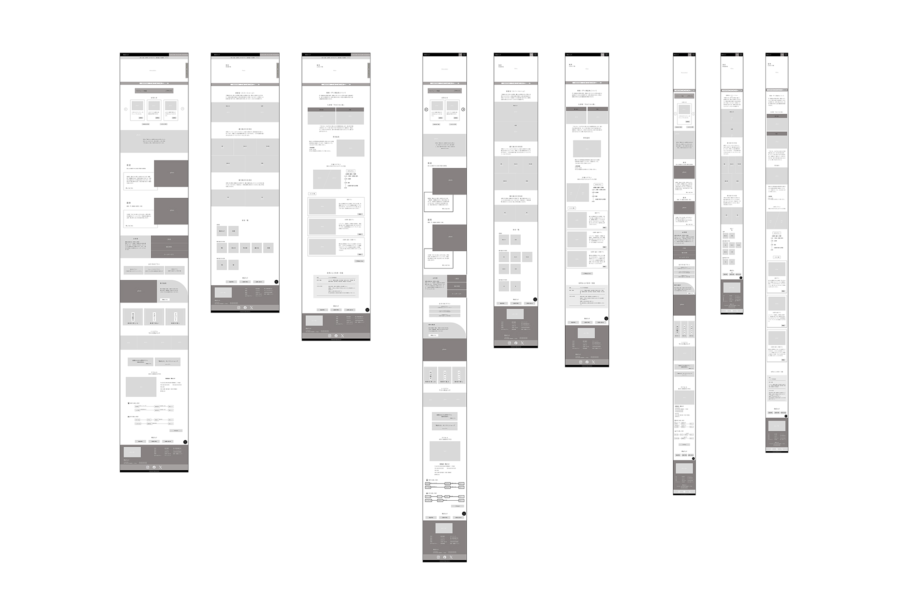
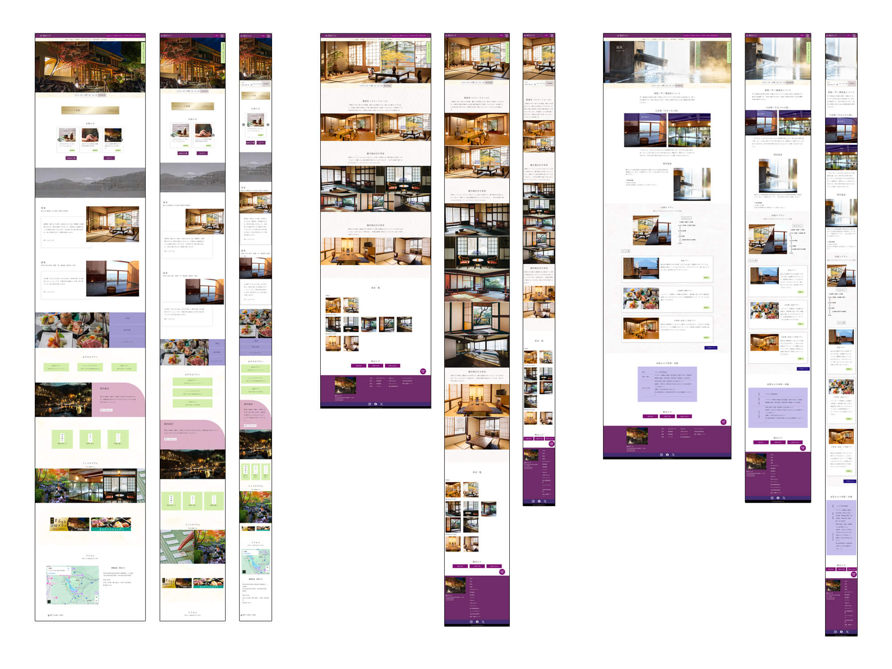

友人旅行代表
鈴木綾香
学生時代の友人3人と毎年温泉旅行。独身で金銭感覚の合う友人との旅行なので、 少し高めの宿で日々の仕事を忘れられる体験を求めている。
Ryokan Website — Self-Initiated
Overview
プロジェクト
自主制作 架空の温泉旅館Webサイト
制作期間
約5週間 2024.07.20 — 2024.08.27
担当範囲
全工程 企画・設計・デザイン・実装
About
神奈川県・箱根の芦ノ湖温泉にある架空の旅館「朝ぼらけ」のWebサイトを自主制作。 「朝ぼらけ」とは夜明けのほのかに明るくなった頃合いを指す言葉で、 旅館の風情ある世界観をWebで表現することを目指した。
歴史ある客室と名湯・芦ノ湖温泉を売りとする旅館として、 アッパーマス層をターゲットに高級感と風情を両立したデザインを制作。 企画からレスポンシブ実装まで全工程を担当した。
Process
企画・情報収集（5h）
箱根・芦ノ湖温泉の旅館を調査し、ターゲット層と競合サイトを分析。サイトの目的と方向性を定めた。
コンセプトシート・ワイヤーフレーム（20h）
ターゲット・ペルソナ・CVを整理したコンセプトシートを作成。レスポンシブを意識したワイヤーフレームで情報設計を行った。
デザインカンプ（10h）
和の風情と高級感を両立した配色・フォント・レイアウトを決定。ファーストビューでの「泊まってみたい」という感情喚起を重視。
HTML / CSS・レスポンシブ実装（41h）
flexとgridを活用してレスポンシブ対応しやすい構造で実装。jQueryプラグイン「bxslider」でファーストビューのスライダーを実装した。
Planning & Structure



Personas — 想定ユーザー
友人旅行代表
学生時代の友人3人と毎年温泉旅行。独身で金銭感覚の合う友人との旅行なので、 少し高めの宿で日々の仕事を忘れられる体験を求めている。
夫婦旅行代表
歴史が好きで万葉集にゆかりのある土地を巡るのが趣味。 夫は城巡りが趣味のため、近場に城のある観光地での旅行プランを立てている。
記念旅行代表
妻との結婚記念日には毎年旅行をプレゼント。 毎年なにか新しい体験を贈りたいと考えており、 特別感のある宿を探している。
Design Comp

Design Thinking
最優先CVは宿泊客の増加。トップページのファーストビューで 「泊まってみたい」と感じてもらうことを最優先に設計した。 歴史があり風情を感じられる色・素材・余白感を意識した。
アッパーマス層向けの高級感・気品を表現するためメインカラーは紫を採用。 旅館名「朝ぼらけ」が持つ夜明けの空のイメージから、 赤みよりの紫を選定。補色の黄緑系をアクセントとして使用。
古典的・和風の印象のために見出し・本文ともに明朝体（游明朝体）を採用。 行間を大きく取りゆったりとした印象に。 詳細リンクのみゴシック体でボタンとして認識しやすくした。
ワイヤーフレーム段階からレスポンシブを意識した構造で設計し、 flexとgridを活用。jQueryプラグイン「bxslider」でスライダーを実装し、 スマホでも美しく見えるよう調整した。
Reflection
職業訓練校で制作した作品の中で、最も工数をかけた案件。
ワイヤーフレームの段階からレスポンシブを意識した構造設計を行ったことで、
コーディング時の手戻りが少なく進められた。
現在の実務経験を経て振り返ると、ターゲットとペルソナの解像度が
このサイトのデザイン判断のベースになっており、
ユーザーを先に決めてからデザインを組む重要性を改めて実感している。